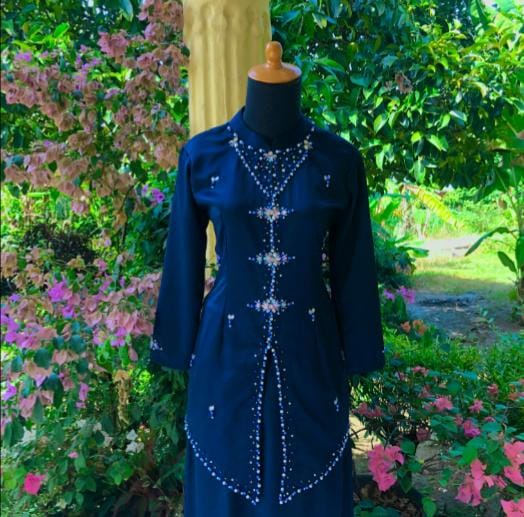

BAJU BRISMED
Baju bridesmaid adalah pakaian khusus yang dikenakan oleh para pendamping pengantin wanita atau bridesmaid dalam sebuah acara pernikahan. Baju ini biasanya dirancang dengan tema, warna, dan gaya yang selaras dengan konsep pernikahan untuk menciptakan tampilan harmonis antara pengantin dan para pendampingnya.
Baju bridesmaid dapat berupa gaun panjang, midi dress, atau kebaya modern, tergantung pada tema acara, baik formal maupun semi-formal. Selain menonjolkan estetika, baju bridesmaid juga dirancang agar nyaman dipakai selama acara berlangsung, sehingga para pendamping pengantin dapat menjalankan perannya dengan baik.
Dengan desain yang serasi, baju bridesmaid tidak hanya mempercantik suasana pernikahan tetapi juga menjadi simbol dukungan dan kebersamaan dalam momen istimewa pengantin.